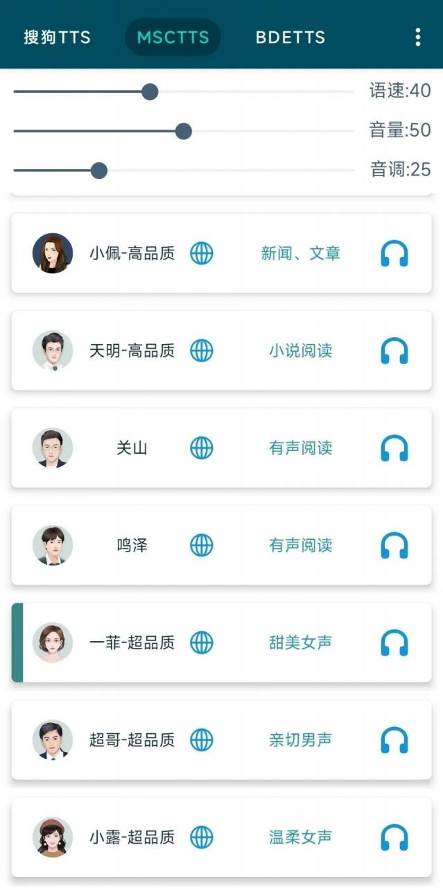

MultiTTS 避坑指南——看着简单其实有几个坑，我替你踩过了
MultiTTS 作为安卓端最火的离线 TTS 引擎，上手门槛低但暗藏几个容易翻车的设置和使用习惯。本文整理了五个真实踩过的坑，从后台被杀到音源包臃肿，从语速过快到老设备兼容，看完至少能省你三四天折腾时间。
MultiTTS 这东西，官网上介绍得很简单，从官方下载拿个包装完打开挑个发音人就能读，看起来简单得不行。但我前后折腾了快一个月，从车载屏到老安卓机，从双语阅读到导出音频，踩了好几个以为要重装 APP 的坑。今天把这些整理出来，你照着防，应该能避开大部分弯路。
坑一：后台读着读着就没声了
症状：晚上躺下听小说，设置好定时半小时，结果翻个身回来发现早就停了，屏幕也灭了，APP 被系统挂起。一开始我以为是阅读 APP 的问题，换了三个阅读器都一样。
原因：安卓的电池优化机制。这个功能默认对几乎所有 APP 开启，一旦屏幕熄灭几分钟后，系统会限制后台进程的 CPU 和内存配额，严重的直接杀死进程。MultiTTS 作为 TTS 引擎，本身是个后台服务，正好撞在枪口上。
解法：关掉电池优化。具体路径因 ROM 不同略有差异，但通用思路是——系统设置里找到"电池"或"省电管理"，进电池优化列表，找到 MultiTTS，把它设为"无限制"或者"允许后台活动"。有的国产 ROM（MIUI、ColorOS 之类）还需要额外在"自启动管理"里允许它自启动，否则重启手机后又会被关。
我第一次遇到时真的以为 APP 坏了，卸了装、装了卸，反复三次才怀疑到电池优化头上。
坑二：装了几十个音源包反而变卡
症状：启动慢了三秒，切发音人要等一秒钟，朗读长文本时偶尔卡顿一下。
原因：音源包不是越多越好。我一开始贪多，百度、搜狗、微软、讯飞的包全下了，大大小小加起来六十多个。MultiTTS 启动时要扫描所有音源包的元数据，每切一个发音人还要重新加载对应的引擎资源。包多了之后，光是扫描就要耗时。而且很多音源包是民间截取版，本身音质有压缩，文件虽小但加载效率更低。
解法：精选。我现在固定保留 3~5 个主力发音人，剩下的批量删除。选的时候优先大厂的完整导出包——文件大小通常 100MB 以上的那种，太小的大概率是截取版，音质残缺不说，有时还会导致合成时出杂音。界面清爽了，启动和切换都快了不少。
还有个细节：角色管理规则也别写太多。我之前配置了十几条角色匹配规则，每次朗读都要逐条遍历匹配，后来精简到五条以内，延迟感确实小了。
坑三：语速拉到 1.5x 以上，发音开始粘在一起
症状：觉得默认语速太慢，拉到最快，结果发现字跟字粘在一起，有的音节直接被吞掉，节奏全乱了。
原因：语速越快，合成引擎需要在相同时间内处理的音频帧就越多。超过 1.3x 之后，MultiTTS 的合成引擎处理压力会显著增大，遇到复杂文本（比如长句、数字串、英文单词）时就容易丢帧。不是 APP bug，是引擎的物理极限。
解法：保持在 1.2x 以下最稳。如果觉得还慢，试试调高"音调"而不是继续加速——音调调高能让朗读听起来更有活力，但不会增加引擎的处理负担。另外别同时把所有参数都拉到极端，多重极端设置叠加会让输出质量明显下降。
长文本场景的话，检查一下你的阅读 APP 有没有"分段朗读"选项。让阅读器自己把长文本拆成句子逐句喂给 MultiTTS，比一次性合成整段要流畅不少。
坑四：老安卓机上音源包导不进去
症状：家里长辈的老手机是 Android 4.4，装完 MultiTTS 后导入音源包报错，或者导进去了但选发音人时找不到。车载屏也是，Android 6.0 都不到，同样的问题。
原因：MultiTTS 官方最低支持 Android 4.0，但"能装"和"好用"之间差了好几个 API 版本。Android 4.x 时代还没有分区存储，TTS API 也刚引入基础版，很多高级特性（语音详情查询、多引擎并行）都是 Android 6.0 之后才有的。民间截取的音源包更是大多没考虑老系统兼容。
解法：分情况。Android 5.0 及以上的设备其实问题不大，音源导入路径调一下就行。Android 4.x 真要跑的话，只能找社区里适配旧版的 MultiTTS（v1.3.x 或更早），功能少一些但基础朗读能用。如果连旧版都不好找，科大讯飞语音引擎和 Google TTS 都有老系统版本可替代。车载屏的话，关键是设成纯离线模式（车上没稳定 Wi-Fi），音源包别装太多，把 MultiTTS 加到车机的后台白名单里。
我试过在 Android 4.1 的旧平板上硬装最新版，启动能进但一选发音人就闪退，最后还是换了旧版本才搞定。
坑五：想把朗读保存成 MP3，发现没导出按钮
症状：听着挺好，想导一份到车载播放器里，翻遍设置找不到"保存音频"。
原因：MultiTTS 的定位是实时朗读引擎，不是录音编辑器。它本身不一定内置直接导出的功能——不同版本差异大，有的版本有，有的版本就没有。这个定位我一开始没搞清楚，白白找了半个小时，后来去MultiTTS文档翻了一下才弄明白。
解法：用系统录屏功能间接录。安卓 10+ 自带录屏，下拉通知栏就能开，录屏时选上"录制系统音频"。录制前把 MultiTTS 的输出通道从"通知音"改成"媒体音"，否则录不到。录完得到的是视频文件，再用 Timbre 或格式工厂这类工具把音轨提取出来就行。如果你的 MultiTTS 版本刚好带"保存合成音频"功能，直接开了用，保存路径一般在 /sdcard/MultiTTS/audio/ 下面。
导出质量的关键是录屏时的音频编码——128kbps 是最低要求，想分享或做有声书的话建议 256~320kbps。音源包本身的音质也有影响，离线音源包通常比在线音源好。

防坑清单
把上面这些浓缩成速查，每次装新设备或换版本时过一遍：
- 装完第一件事：去电池设置里关优化，加自启动白名单
- 音源包控制在 3~5 个主力，别贪多
- 语速别超 1.2x，调音调比调速度更健康
- 老设备先看版本号，Android 5.x 以下直接找旧版 MultiTTS
- 导出音频走录屏路线，别死等 APP 自带按钮
知道这些坑之后，这软件其实相当省心。MultiTTS 作为安卓端最成熟的离线 TTS 方案，音源生态丰富、角色管理灵活，把这些小问题搞定之后，日常用起来基本没什么障碍。无论是睡前听书、车载朗读还是学习英语的双语对照，都能顶得住。开源资料我放了三处备份——GitHub是主仓库，国内访问的朋友可以去Gitee或GitCode。